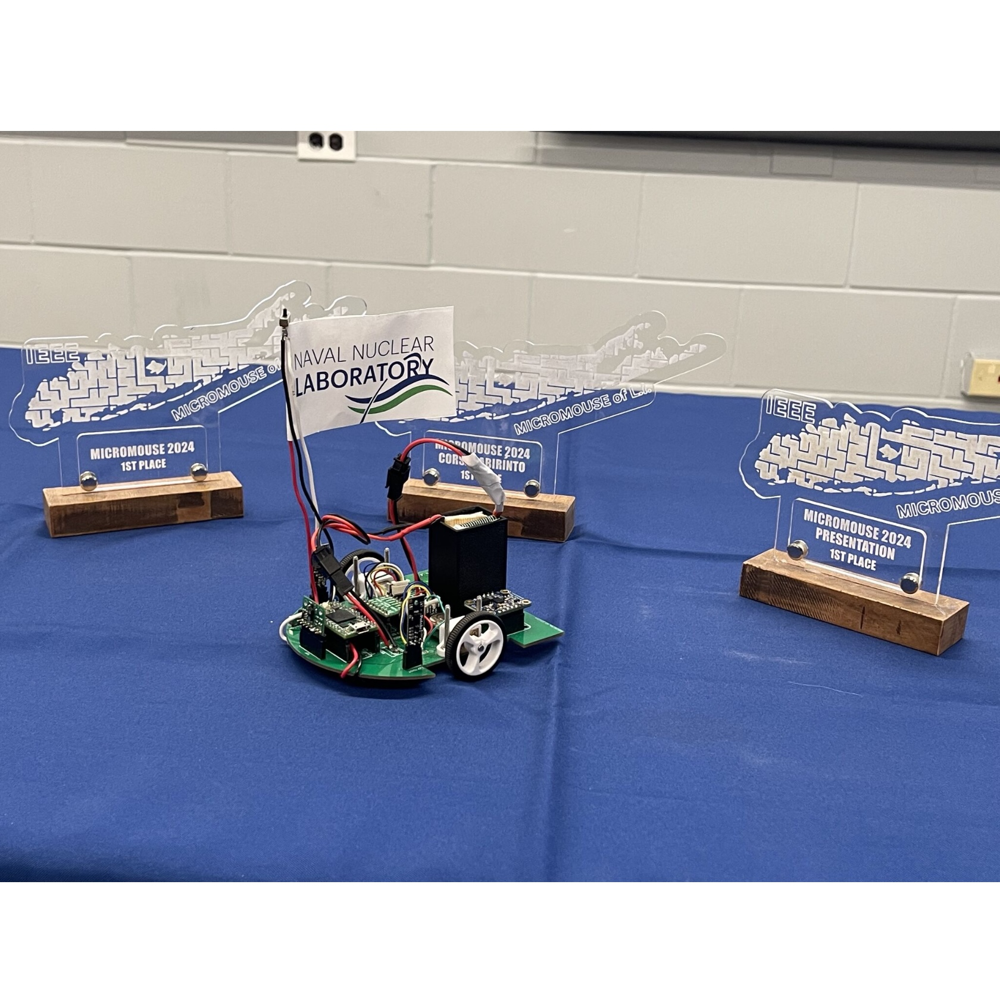
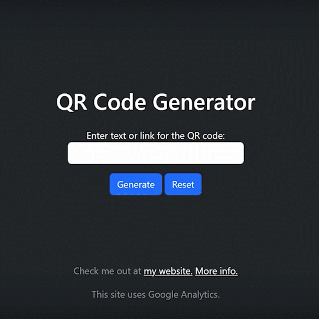
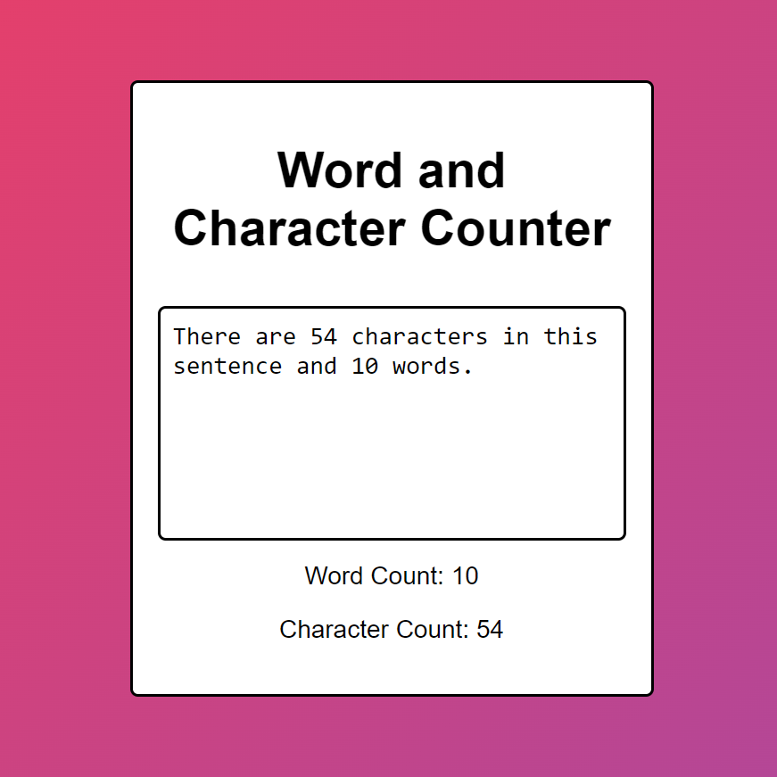
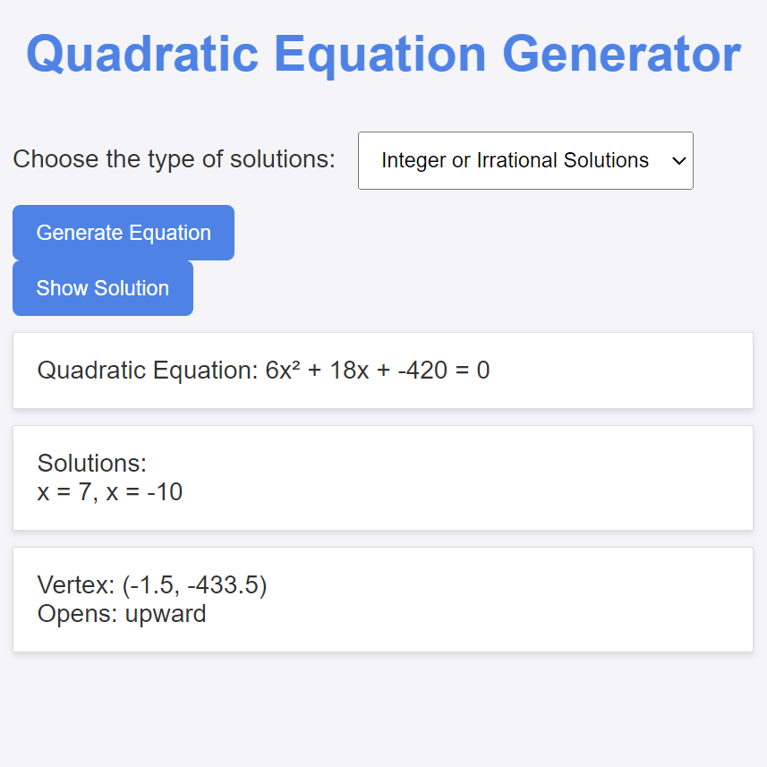

Hi! My name is Ayaan.
I am a pursuing my M.S. in Electrical Engineering at Columbia University.
I did my undergraduate studies in Electrical & Computer Engineering at Rutgers University.
My motto is “cogito, facio”, meaning “I think, I make.” I love building cool things. I enjoy working on the cutting edge of technology.
As a freshman at Rutgers, I was originally a neuroscience major. At the time, I was jailbreaking my PS4. That led me on the path towards Computer Engineering, where I developed my skills in machine learning, embedded systems, and signal processing.
This culminated in my Senior Capstone project where we built a rover that can hack into Wi-Fi networks. We later presented our work at DEF CON 33.
I also wrote an undergraduate thesis. This work explored the use of news headlines to improve stock price prediction performance.
I love mentorship and giving back to the community. I mentored ten outstanding high school students for the Governor's School of New Jersey. Their work enhanced search & rescue technology by building autonomous drones. We gave two presentations to the MIT URTC and earned a provisional patent.
Outside of my tech interests, I love to read, watch cinema, go on long walks, and watch sports.
Feel free to connect me on LinkedIn, or view my Google Scholar and GitHub sites.
Please feel free to email me at: ayaan.qayyum@columbia.edu

Education
Columbia University
M.S. in Electrical Engineering | Sep 2025 -- Present
Specialization in Data-Driven Analysis and Computation.
Tesla Scholar
Rutgers University
B.S. in Electrical Engineering | May 2025 | Summa Cum Laude
GPA: 3.92/4.0.
Dean's List for all semesters
Research Experience
Graduate Research Intern
Intelligent and Connected Systems Lab (ICSL), Columbia University
Graduate Research Intern
REALTIME team at WINLAB, Rutgers University
On Campus Experience
Rutgers University
Program Mentor | The Governor's School of New Jersey | Jan 2025 – Jul 2025
Learning Assistant | Engineering Economics | Sep 2023 – May 2024
Engineering Peer Advisor | First Year Integration Program | Sep 2023 – May 2024
President | IEEE-HKN Honor Society | Sep 2023 – May 2025
Volunteer | IEEE Princeton Central Jersey Section (PCJS) | Sep 2023 – May 2025
Skills
Technologies I know:
- Python
- PyTorch
- TensorFlow
- Sci-kit Learn
- PostgresSQL
- Apache Spark
- Linux
- MATLAB
- Git/GitHub/VCS
- HTML / JavaScript
- MPI, Socket, Ansible
Certifications:
- AWS Cloud Practitioner
- AWS AI Practitioner
Projects
Unmanned Wireless Penetration Testing Device
Embedded technology platform, fully Kali Linux capable, with ad-hoc LoRa network technology.
Python • Linux • LoRa
News Sentiment Embeddings for Stock Price Forecasting
Explore the benefits of integrating news headline to improve stock price prediction performance.
Python • PyTorch • Pandas
FFT-on-FPGA Learning Tool
Explore learning and coding an FFT in Verilog with a demonstration. Presented at the IEEE ISEC 2025.
Verilog • Python
Rutgers IEEE Micromouse
Our team won 1st place in the regional competition.
HTML • CSS • JavaScript
QR Code Maker
One professor needed a tool to generate QR codes without ads. So I made one!
HTML • CSS • JavaScript
Calculator for Engineering Economics

Possibly my most useful web app. As a Learning Assistant, I saw students could use a tool to help them with their homework, so I built one. During the semester, it's used by over 100 students per month.
HTML • CSS • JavaScript
Word and Character Counter
I catch myself searching up a tool like this very often, so I made one.
HTML • CSS • JavaScript
Tetris

This was a real challenge to build at the time, but I learned a lot and still come back and play with it from time to time.
HTML • CSS • JavaScript
Quadratic Equation Generator
My brother needed something that could generate quadratic equations.
HTML • CSS • JavaScript